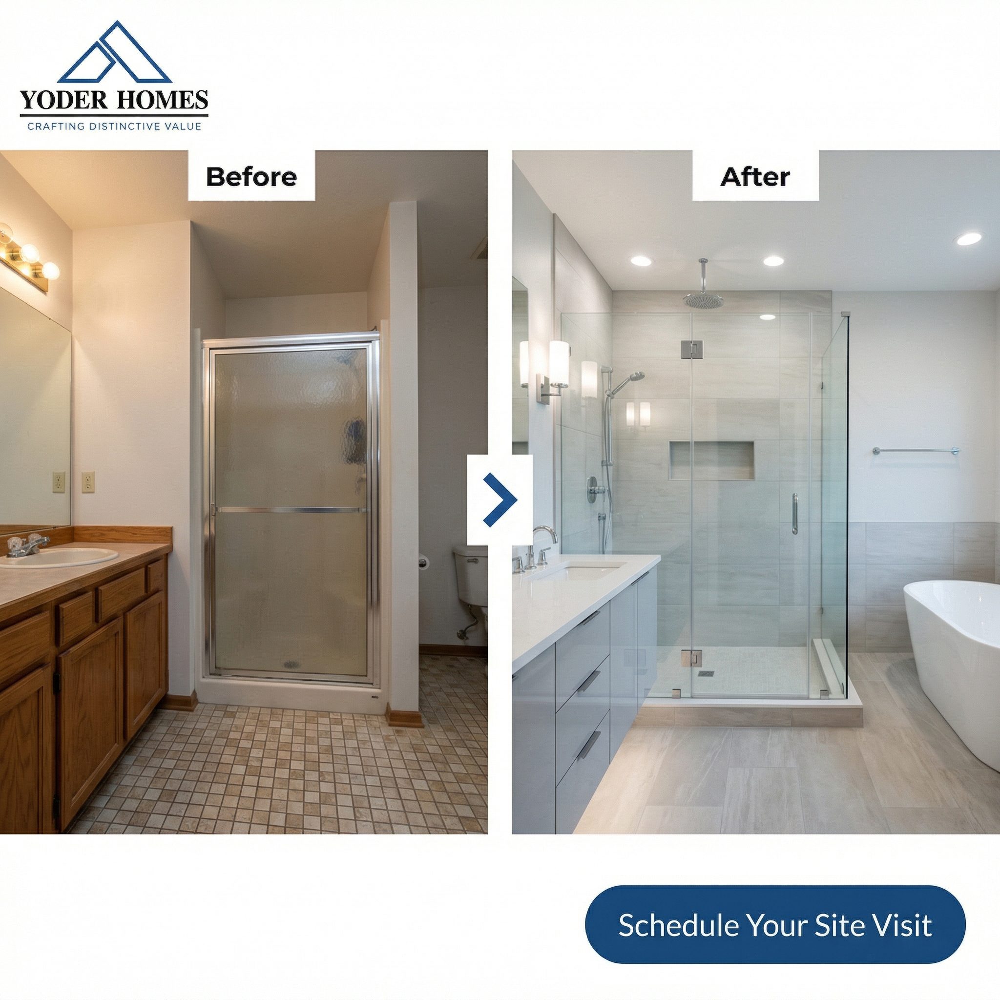
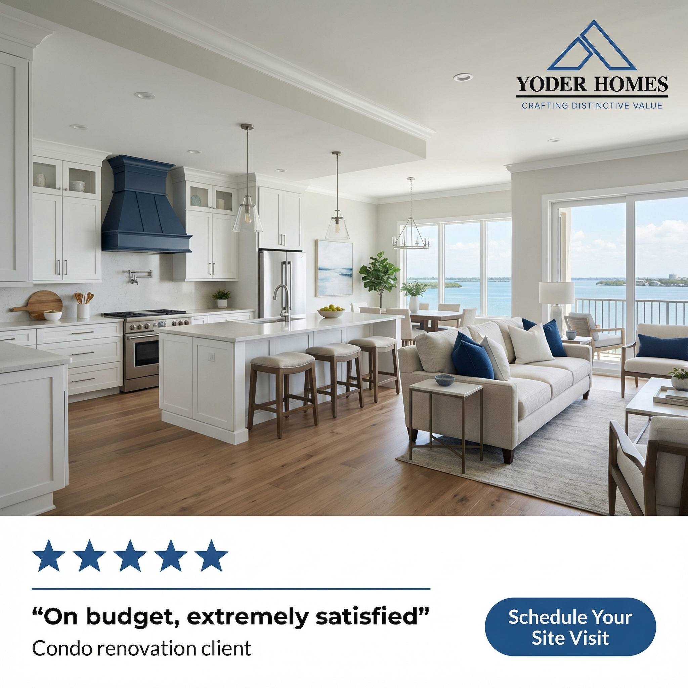
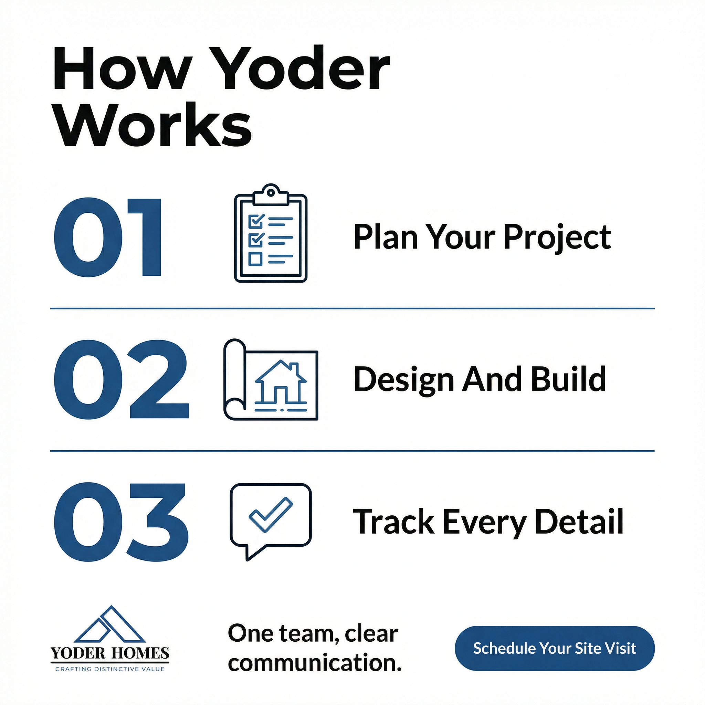
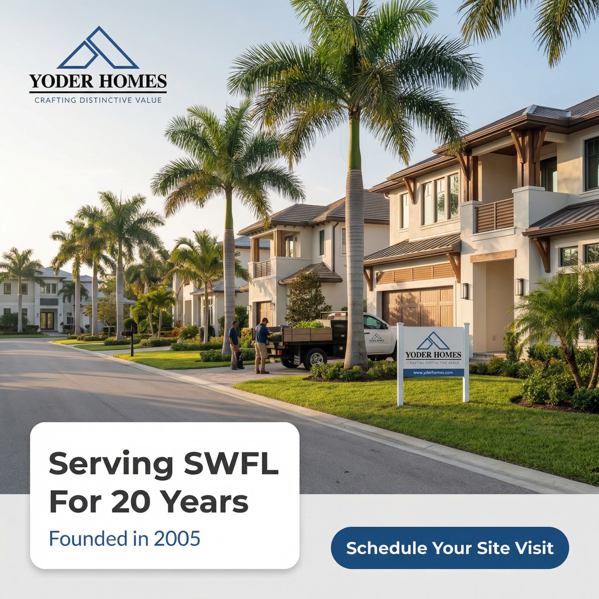
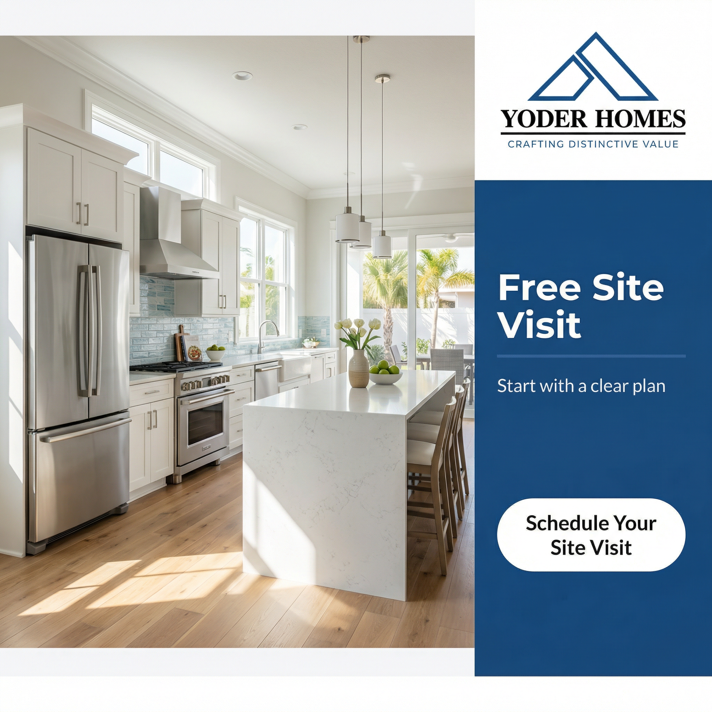

01
9 image ad concepts
Built around the strongest public angle: less contractor chaos, more guidance, more trust.
The strongest public proof for Yoder is not generic luxury messaging. It is the promise of a seamless building experience for Sarasota homeowners who do not want to manage individual contractors themselves.
No cost, no obligation - 30 min to see if it fits
This funnel is designed to move Yoder away from thin, generic ad activity and toward a stronger local remodel message backed by real public proof.
Built around the strongest public angle: less contractor chaos, more guidance, more trust.
Different angles for pain, proof, and decision-making, all in a voice that matches Yoder's grounded brand.
A cleaner conversion path built around the exact message your testimonials already support.
The market is crowded with dream-home and luxury-first language. The proof on Yoder's own site is stronger: homeowners trust you when they feel guided, updated, and protected from project chaos.
The clearest pain line is "don't want to worry about managing individual contractors."
Your testimonials already talk about communication, process enjoyment, craftsmanship, and on-budget work.
Every ad pushes to one focused page and one clear action: schedule the site visit.
These concepts are built from Yoder's own testimonial language, Sarasota positioning, and the biggest gap in the current creative: no clear stress-relief message for remodel buyers.
Show custom homes, remodels, condo renovations, and additions in one architectural collage so the prospect immediately sees range.

Visually connect the "ugly master bath" problem to the "absolutely stunning spa bathroom" result.
The strongest problem-aware line in the public data is not wanting to manage individual contractors.

Use the bath-and-closet remodel testimonial to prove finish quality and ease of working together.
Pair the condo story with the on-budget, highly satisfied testimonial to reinforce process trust.

A simple 3-step process graphic creates structure around planning, design-build, and tracked updates.

Lean into the strongest local proof line: serving SWFL for 20 years.

Give the homeowner a concrete first step instead of a vague consultation invitation.
The hero ad uses the strongest outcome phrase directly: a seamless building experience.
Homeowners do not want to act as project manager during a remodel.
If you're planning a remodel and you don't want to worry about managing individual contractors, listen to this. Most projects get stressful before they ever get exciting, because the homeowner ends up acting like the project manager.
That's where people get stuck. They start by calling a few trades, comparing prices, chasing callbacks, and trying to keep the whole thing moving themselves. Then communication slips, details get missed, and a project that was supposed to improve your home starts draining your time.
At Yoder Homes, every project is a partnership. We're here to listen, to guide, and to build. That means one team helping you plan the work, coordinate the moving pieces, and keep you informed all the way through.
We've been serving SWFL for 20 years, and that steady communication shows up in the feedback people leave us. One condo-renovation client said they would highly recommend Yoder to anyone with a complex project who doesn't want to worry about managing individual contractors. And the end result is a seamless building experience.
If that sounds like the kind of remodel process you want, click the button below, land on the project page, answer a few quick questions, and schedule your site visit.
Environment: finished kitchen or office. Camera: phone, eye-level. Framing: medium shot. Lighting: natural window light. Energy: calm and confident. Wardrobe: deep blue or charcoal, avoid red, purple, and neon colors.
Yoder's strongest proof is the guided experience clients describe after complex remodels.
If you're about to gut a condo or take on a major home remodel, the question is not just who can build it. The question is who can guide it well from start to finish.
One Sarasota condo client said Yoder guided the project with expertise, experience, and a professional standard that was unrivaled. Another said the process was enjoyable and completed with great quality. Another said the work was on budget and left them extremely satisfied.
That does not happen by accident. It comes from having a real process, clear communication, and an assigned point of contact instead of bouncing from trade to trade. Crafting Distinctive Value means the final space looks beautiful, but it also means the way you get there feels organized and well handled.
Click the button below, go to the next page, fill out the short project form, and schedule your site visit so we can see what's possible in your home.
Environment: desk with plans or finish samples. Camera: phone, eye-level. Framing: medium shot. Lighting: soft natural light. Energy: reassuring and detail-oriented. Wardrobe: deep blue or charcoal, avoid orange, purple, and neon green.
The bigger homeowner risk is not higher spend, it's a fragmented process that creates mistakes and stress.
Here's the mistake a lot of homeowners make before a remodel. They think the safest move is collecting the cheapest bids from a bunch of separate contractors.
What usually happens next is exactly why hiring someone for a job feels so stressful. Nobody owns the whole process. One person blames another. The homeowner has to chase updates.
Yoder was built to work differently. The company has been serving SWFL for 20 years, has a team of over 18, and does upwards of $20 million in annual sales. That points to stability, systems, and support. If what you want is a seamless building experience, the answer is not more contractors. It's a better process.
If you want to see what that process would look like for your project, click below, review the next page, complete the short form, and schedule your site visit.
Environment: tidy office or active but clean project area. Camera: phone, eye-level. Framing: medium shot. Lighting: natural light. Energy: direct, steady, lightly contrarian. Wardrobe: charcoal or deep blue, avoid yellow, purple, and neon tones.
The page focuses on the exact angle Yoder can own: a seamless building experience for Sarasota homeowners who want a better process.
Your website has broad navigation and multiple audience paths. This page gives one audience one message and one next step.
It turns testimonials into positioning, trims the choices down, and points every CTA to a site visit.
It uses the strongest language your customers already gave you, rather than borrowing generic luxury copy from the market.
Pain, proof, and site-visit messaging.
One promise, one form, one CTA.
Project type, timing, and fit.
Yoder reviews and reaches out.
Site visit or planning conversation.
The research, angles, ads, scripts, and landing page are aligned around the strongest white space in Yoder's market.
Confirm the remodel-first angle, site-visit CTA, and your preferred market priority.
Drop the 9 image prompts into production, record the Loom, and film the scripts.
Connect the page, route the form properly, and test the ads against a clear local offer.

145 leads in 2 weeks.

66 recurring clients in 27 days.

50 recurring clients in 2 weeks.
The goal is simple: show Yoder exactly how the funnel could look before you commit to anything.
Because it comes from Yoder's own testimonials and public proof, not generic agency copy.
Once the creative assets and form routing are approved, the funnel can go live fast.
Best project photos, preferred service priority, and final approval on the CTA path.
That depends on service priority and geography, but the funnel is structured so spend has a focused destination from day one.

I build focused direct-response funnels for businesses that need stronger messaging, cleaner conversion paths, and a real reason for the right buyer to respond.
For Yoder, the opportunity is not adding more generic custom-home language. It is building a clearer trust path around project guidance, communication, and relief from contractor chaos.
That is the spine of everything on this page: the ad concepts, the video scripts, and the landing-page structure.
Let's get this livePick a time below.